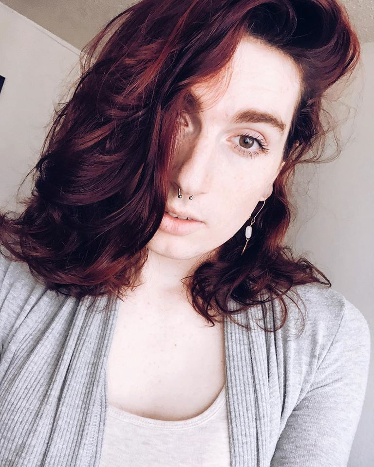
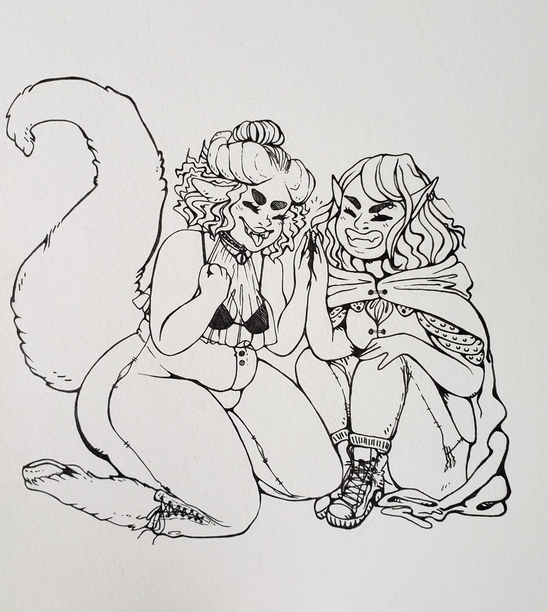

Gallae is a writer, streamer and RPG player based in San Diego, California. She has two cats, Lulu and Jinx, and makes D&D characters for fun in her spare time.
“I think, first and foremost, that whatever character you make needs to excite you. If you make a character and don’t feel strongly about wanting to play them at some point in the future, they’re probably not a very good character. Tinker with their concept, background, class and subclass, etc., until you find something that makes you wish session 1 was tomorrow.”
 Art by @verminhands on twitter